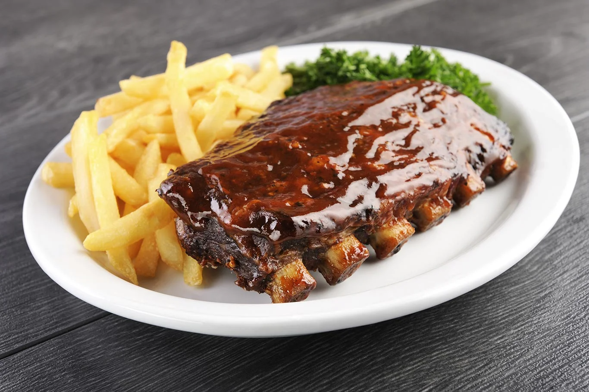
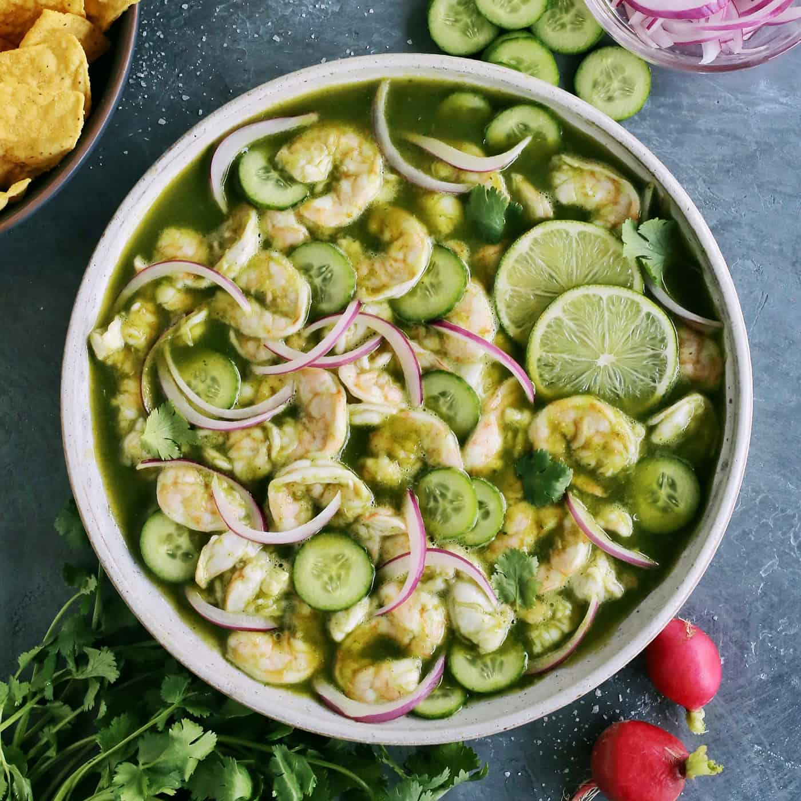

U
UAdeO
UNIVERSIDAD
AUTÓNOMA DE
OCCIDENTE
UNIVERSIDAD AUTÓNOMA DE
OCCIDENTE
UNIDAD REGIONAL
CULIACÁN
INGENIERÍA DE SOFTWARE
MANUAL DE USUARIO:
“Manual de Usuario: Sistema de Gestión para Restaurantes GastroSoft”
NOMBRE: Héctor Paul Vizcarra Astorga
MATRÍCULA: 23040013
ASIGNATURA: Innovación de ingeniería de software
FECHA: 29/05/2026
Este manual es una guía práctica para el usuario final. Explica cómo entrar al sistema, navegar por los módulos y realizar las operaciones principales sin usar lenguaje técnico.
2Navegación básica del sistema
4
4Comandas y nueva comanda
6
6Mesas, reservaciones y cuentas separadas
9
7Pagos, caja y reportes
12
8Inventario y proveedores
14
9Personal, asistencia, clientes y configuración
16
10Guía visual detallada de los 13 módulos
17
11Preguntas frecuentes y glosario
31
GastroSoft es un sistema web para administrar la operación diaria de un restaurante: comandas, mesas, reservaciones, pagos, inventario, empleados, proveedores, reportes y configuración.
¿Para qué sirve?Centraliza la información del restaurante para trabajar más rápido, reducir errores y consultar datos en tiempo real.
¿Quién lo usa?Administradores, gerentes, meseros, cajeros y personal autorizado según su rol.
Cómo ingresar
- 1
Abra GastroSoft desde el navegador del equipo.
- 2
Escriba su usuario y contraseña.
- 3
Presione el botón de ingreso.
- 4
Si termina su turno, use Salir en la esquina superior derecha.

DashboardComandasMenúMesas
Héctor Paul · Salir
Acceso seguro
Use solamente su usuario asignado. No comparta contraseñas.
Roles
El sistema muestra módulos dependiendo de los permisos del usuario.
1
1. Usuario activo y botón Salir.
2. Menú principal de módulos.
3. Área de trabajo del módulo seleccionado.
La navegación de GastroSoft se realiza desde la barra naranja superior. Desde ahí puede cambiar de módulo, consultar el usuario actual y cerrar sesión.
DashboardComandasMenúMesasInventarioCajaConfiguración
19:25:26 · Salir
Buscar información...
Filtro de estado
Filtro de fecha
1
2
3
Reglas rápidas de uso
BuscarEscriba mesa, cliente, producto o proveedor para localizar registros más rápido.
FiltrosUse los selectores para ver solo activos, pagados, pendientes, fechas o estados.
Botones verdesGeneralmente guardan, confirman o abren acciones positivas.
Botones rojosCancelan, eliminan o advierten una acción importante.
El Dashboard muestra un resumen rápido de la operación del restaurante. Sirve para revisar ventas, comandas, mesas y alertas importantes sin entrar módulo por módulo.
DashboardComandasPagosInventario
Administrador
Actividad reciente
Últimas comandas, pagos y cambios relevantes.
Resumen diario
Indicadores principales para tomar decisiones rápidas.
1
2
- 1
Revise las tarjetas superiores para conocer el estado general.
- 2
Si detecta una alerta, entre al módulo correspondiente para revisarla.
- 3
Use el Dashboard al inicio y cierre del turno para validar operación.
En Comandas se consultan las órdenes activas, pendientes o pagadas. Cada comanda aparece como tarjeta con mesa, hora, productos, mesero, total y botones de acción.
DashboardComandasMenúMesasPagos
Héctor Paul
Buscar mesa o cliente...
Todas (4)
Pendientes (1)
Mesa 303
PendienteReservación - María Pérez
Mesero: Héctor Paul
Total: $58.65
Ver Comanda2/5
Mesa 101
Pagada
Mesero: Ana Rodríguez
Total: $129.36
Ver Comanda0/0
1
2
3
- 1
Use el buscador y filtros para encontrar una mesa o cliente.
- 2
Revise estado, mesero y total antes de abrir la comanda.
- 3
Presione Ver Comanda para consultar productos o editar.
- 4
Use el botón de cuentas separadas cuando la mesa se divide por personas.
La ventana de Nueva Comanda permite seleccionar productos del menú, aplicar promociones y guardar una orden.
Platos Calientes · Pizzas · Bebidas · Snacks
Comanda
Promociones

Filete de Pescado$12.50

Camarones Rellenos$16.90

Costillas BBQ$18.75
Productos agregadosNachos con queso · Cantidad 2
Limonada · Cantidad 1
Total$28.00
Guardar Comanda
1
2
3
- 1
Seleccione una categoría o busque el producto.
- 2
Haga clic en la tarjeta del producto para agregarlo.
- 3
Ajuste cantidades, escriba comentarios si aplica y presione Guardar Comanda.
Las imágenes usadas en el catálogo corresponden a productos del sistema GastroSoft.
Menú
Administra productos, categorías, precios e imágenes. Los productos activos aparecen al crear comandas.
Promociones
Permite consultar o aplicar descuentos, combos y ofertas disponibles.
ComandasMenúPromociones
Administrador

Aguachile$13.50

Ceviche Mixto$11.75
1
2
- 1
Para revisar productos, entre a Menú y seleccione categoría.
- 2
Para promociones, entre a Promociones y revise nombre, descripción y condiciones.
- 3
Al crear una comanda, seleccione promociones desde el panel derecho si están disponibles.
El módulo Mesas ayuda a conocer disponibilidad, ubicación y capacidad antes de asignar una comanda o reservación.
ComandasMesasReservaciones
Gerente
Mesa 101
DisponibleInterior · 4 personas
Mesa 202
OcupadaTerraza · Comanda activa
Mesa 303
ReservadaReservación - María Pérez
Mesa 405
DisponibleInterior · 2 personas
1
2
DisponiblePuede usarse para nueva comanda o reservación.
OcupadaTiene comanda activa y no debe reasignarse.
ReservadaEstá apartada para un cliente y horario específico.
UbicaciónIndica si la mesa está en interior, terraza u otra zona.
Reservaciones permite crear, editar y cancelar reservas. También muestra las reservas activas y el historial.
DashboardComandasClientes
Usuario
Buscar cliente, teléfono o mesa...
Todas las reservas
Hoy
👤
María Pérez
Confirmada
Fecha11 Feb 2026
Hora13:10 PM
Personas5
Mesa#303
Teléfono3244323434
EditarCancelar
1
2
3
- 1
Presione Nueva Reservación.
- 2
Capture cliente, fecha, hora, personas, mesa y teléfono.
- 3
Use Editar para corregir datos o Cancelar para liberar la mesa.
Esta función divide una comanda por persona. Es útil cuando varios clientes comparten mesa, pero cada quien paga su consumo.
Mesa 303 - Carlos
Reservación - María PérezCuenta separada
Productos asignados: 3
Total: $28.00
Ver ComandaMesa 303 - Ana
Reservación - María PérezCuenta separada
Productos asignados: 2
Total: $19.55
Ver Comanda
1
2
- 1
Abra la comanda y presione el botón de cuentas separadas.
- 2
Ingrese el nombre de la persona para la cuenta.
- 3
Asigne productos a esa persona y guarde.
- 4
Al cobrar, revise que cada cuenta tenga sus productos correctos.
Si es reservación, se muestra también el nombre del dueño de la reservación.
Pagos
Permite cobrar comandas, validar total y marcar una orden como pagada.
Caja
Controla operaciones del turno: apertura, cierre, efectivo y movimientos.
ComandasPagosCajaReportes
Cajero
Comanda #15
Mesa 303
Total: $86.00
CobrarCaja
Apertura: $500.00
Ventas: $1,245.00
Estado: Abierta
Cerrar caja
1
2
- 1
Seleccione la comanda que se va a cobrar.
- 2
Revise productos, descuentos y total.
- 3
Confirme el pago y verifique que el estado cambie a pagada.
- 4
Al terminar turno, revise caja y haga el cierre correspondiente.
Reportes muestra información para revisar ventas, comandas, pagos y operación general. Sirve para tomar decisiones y comprobar cierres.
PagosReportesCaja
Gerente
Rango de fecha
Tipo de reporte
Generar reporte
1
2
- 1
Seleccione el rango de fechas que desea consultar.
- 2
Elija el tipo de reporte disponible.
- 3
Revise los resultados antes de tomar decisiones de cierre o inventario.
Inventario controla ingredientes por proveedor, cantidades disponibles, mínimos y alertas de stock bajo o agotado.
PagosInventarioProveedores
Administrador
Buscar ingrediente...
Todos los proveedores
Todos los estados
Ingrediente
Disponible
Mínimo
Estado
Alitas
20.00 kg
5 kg
Stock normal
Carne Molida
0.00 kg
5 kg
Agotado
Costillas
10.00 kg
5 kg
Stock bajo
1
2
- 1
Busque el ingrediente o filtre por proveedor/estado.
- 2
Revise si está normal, bajo o agotado.
- 3
Use Editar stock para ajustar límites o Registrar entrada/salida para movimientos.
Proveedores
Registra empresas o personas que surten ingredientes al restaurante.
Movimientos
Entrada aumenta stock. Salida descuenta stock por venta, merma o ajuste autorizado.
Cárnicos Del Norte
4 productos
Alitas · Carne Molida · Costillas · Pollo
Últimos movimientos
Entrada Pollo +5.00 kg
Salida Harina -3.00 kg
1
2
- 1
Abra el proveedor para revisar sus productos.
- 2
Registre entradas cuando llegue mercancía.
- 3
Registre salidas cuando se descuente inventario.
Personal
Administra empleados, rol, estado y datos básicos.
Asistencia
Registra entradas y salidas de empleados para control de jornada.
Clientes
Consulta datos de clientes relacionados con reservaciones y consumo.
Configuración
Permite ajustar opciones del sistema. Debe usarse solo por personal autorizado.
Personal / AsistenciaClientesConfiguración
Administrador
Héctor Paul
ActivoRol: Mesero
Asistencia: Entrada registrada
Cliente: María Pérez
ReservaciónTeléfono: 3244323434
Mesa: 303
- 1
Para empleados, revise datos y estado antes de asignar operaciones.
- 2
Para asistencia, registre entrada/salida según el turno.
- 3
Para clientes, busque por nombre o teléfono cuando necesite consultar información.
El Dashboard es la pantalla de resumen. Se recomienda revisarlo al inicio, durante y al final del turno para conocer el estado general del restaurante.
DashboardComandasMenúPagosInventario
Héctor Paul · Salir
Actividad del día
Últimas ventas, comandas recientes y movimientos importantes del turno.
Resumen operativo
Indicadores principales para detectar si hay mesas pendientes, pagos o alertas.
1
2
3
1. Barra de navegación para cambiar de módulo.
2. Tarjetas de resumen del día.
3. Paneles con actividad y alertas.
- 1
Revise las tarjetas superiores para conocer el estado general.
- 2
Si una tarjeta indica alerta, entre al módulo relacionado para resolverla.
- 3
Use el Dashboard como punto de partida para supervisar la operación.
Comandas muestra las órdenes abiertas, pendientes o pagadas. Desde aquí se revisa la mesa, mesero, productos, total y cuentas separadas.
DashboardComandasMenúMesasPagos
Héctor Paul
Buscar mesa o cliente...
Todas (4)
Pagadas (3)
Mesa 303
PendienteReservación - María Pérez
Hora: 19:25 · Productos: 4
Mesero: Héctor Paul
Total: $68.97
Ver Comanda2/5
Mesa 101
Pagada
Hora: 18:45 · Productos: 5
Mesero: Ana Rodríguez
Total: $129.36
Ver Comanda0/0
1
2
3
4
1. Buscador y filtros de estado.
2. Datos principales de la tarjeta.
3. Botón para abrir detalle de comanda.
- 1
Busque la mesa o cliente.
- 2
Revise si está pendiente, pagada o ligada a reservación.
- 3
Abra Ver Comanda para revisar productos y cantidades.
- 4
Use el botón lateral para administrar cuentas separadas.
El módulo Menú permite consultar y administrar los productos que se venden. Las imágenes y precios se usan también al crear una comanda.
ComandasMenúPromocionesInventario
Administrador
Buscar producto...
Categoría: Platos calientes
Producto activo
Filete de Pescado$12.50
Ceviche Mixto$11.75
1
2
3
- 1
Use el buscador para localizar un platillo o bebida.
- 2
Seleccione la categoría que desea revisar.
- 3
Revise imagen, nombre, precio y estado del producto.
- 4
Si tiene permiso, edite la información del producto cuando sea necesario.
Mesas permite ver qué mesas están disponibles, ocupadas o reservadas. Es importante revisarlo antes de crear una comanda o reservación.
ComandasMesasClientes
Gerente
Mesa 101
DisponibleInterior · Capacidad 4 personas
Mesa 202
OcupadaTerraza · Comanda activa
Mesa 303
ReservadaReservación - María Pérez
Mesa 405
DisponibleInterior · Capacidad 2 personas
1
2
3
- 1
Identifique la mesa por número.
- 2
Revise el estado: disponible, ocupada o reservada.
- 3
Verifique ubicación y capacidad antes de asignarla.
Este módulo controla empleados, roles y asistencia. Ayuda a saber quién está activo y quién atendió una comanda.
Personal / AsistenciaComandasReportes
Administrador
Buscar empleado...
Todos los roles
Activos
Héctor Paul
ActivoRol: Mesero
Entrada: 09:00 AM
Estado: En turno
EditarAna Rodríguez
ActivoRol: Cajera
Entrada: 10:00 AM
Estado: En turno
Editar
1
2
3
- 1
Busque al empleado o filtre por rol.
- 2
Revise si está activo y si tiene asistencia registrada.
- 3
Edite datos solamente si cuenta con permiso administrativo.
Pagos permite cobrar una comanda, confirmar el total y marcarla como pagada. Es una pantalla crítica para evitar errores de caja.
ComandasPagosCaja
Cajero
Comanda #15
Mesa 303
Mesero: Héctor Paul
Productos: Costillas BBQ x1, Limonada x2
Total a pagar
$86.00
Confirmar pagoCancelar
1
2
3
- 1
Seleccione la comanda que se va a cobrar.
- 2
Revise productos y total.
- 3
Confirme el pago solo si el cliente ya pagó.
Inventario controla ingredientes, cantidades disponibles, mínimos y alertas de stock. Sirve para saber qué productos necesitan compra.
InventarioProveedoresReportes
Administrador
Buscar ingrediente...
Todos los proveedores
Todos los estados
Ingrediente
Disponible
Mínimo
Estado
Alitas
20.00 kg
5 kg
Stock normal
Carne Molida
0.00 kg
5 kg
Agotado
Costillas
10.00 kg
5 kg
Stock bajo
1
2
3
- 1
Busque el ingrediente o filtre por proveedor.
- 2
Revise el estado para detectar bajo stock o agotado.
- 3
Registre entrada o salida cuando cambie la cantidad disponible.
Proveedores concentra las empresas o personas que abastecen ingredientes. Se usa junto con inventario y movimientos de stock.
InventarioProveedoresReportes
Administrador
Buscar proveedor...
Todos
Nuevo proveedor
Cárnicos Del Norte
4 productosContacto: ventas@carnicos.mx
Teléfono: 667 000 0000
EditarGranosMX
5 productosContacto: compras@granos.mx
Teléfono: 667 111 1111
Editar
1
2
3
- 1
Busque el proveedor por nombre.
- 2
Revise datos de contacto y productos relacionados.
- 3
Edite datos si cambian teléfono, nombre o información de contacto.
Promociones permite administrar ofertas, combos o descuentos que se aplican en comandas.
MenúPromocionesComandas
Gerente
Hora Feliz
Activa15% de descuento en bebidas frías y calientes.
Editar2x1 en Pizzas
ActivaPromoción disponible para categoría pizzas.
EditarMenú del día
RevisarCamarones rellenos + limonada.
EditarMenú Infantil
ActivaNuggets + limonada.
Editar
1
2
3
- 1
Revise el nombre y descripción de la promoción.
- 2
Confirme si está activa antes de usarla.
- 3
Al crear una comanda, agregue el combo desde el panel de promociones.
Clientes concentra la gestión de reservaciones. Desde aquí se crean, editan y cancelan reservas de mesa.
MesasClientesComandas
Usuario
👤
María Pérez
Confirmada
Fecha11 Feb
Hora13:10
Personas5
Mesa#303
Teléfono3244323434
EditarCancelar
1
2
3
- 1
Presione Nueva Reservación para crear una reserva.
- 2
Revise cliente, fecha, hora, personas, mesa y teléfono.
- 3
Use Editar si hay cambios o Cancelar si el cliente ya no asistirá.
Reportes permite consultar resultados de ventas, comandas y operación. Es útil para cierres y revisión administrativa.
PagosReportesCaja
Gerente
Fecha inicial
Fecha final
Generar reporte
1
2
3
- 1
Seleccione el rango de fechas.
- 2
Genere o consulte el reporte disponible.
- 3
Revise ventas, comandas y pendientes antes de cerrar el turno.
Caja permite controlar el dinero del turno. Se usa para apertura, movimientos y cierre.
PagosCajaReportes
Cajero
Movimiento
Entrada de efectivo · Pago de mesa 303
Cierre
Revise el total antes de cerrar caja.
Cerrar caja
1
2
3
- 1
Revise fondo inicial, entradas, salidas y total.
- 2
Registre movimientos cuando sea necesario.
- 3
Cierre caja solo cuando termine el turno y los pagos estén correctos.
Configuración contiene ajustes del sistema. Debe usarse con cuidado y únicamente por personal autorizado.
DashboardReportesConfiguración
Administrador
Datos del restaurante
Nombre, información general y datos visibles.
EditarUsuarios y permisos
Control de acceso para empleados.
EditarParámetros
Ajustes operativos del sistema.
EditarSeguridad
Revisión de acciones sensibles.
Editar
1
2
3
- 1
Entre solo si tiene autorización.
- 2
Revise cuidadosamente qué ajuste va a modificar.
- 3
Guarde cambios únicamente si está seguro del efecto.
Esta página resume cómo debe moverse un usuario nuevo durante un día normal de operación.
Inicio de turno
Inicie sesión, revise Dashboard, confirme caja, revise mesas e inventario crítico.
Servicio
Cree comandas, agregue productos, controle reservaciones, separe cuentas y mantenga pagos actualizados.
Control
Revise reportes, movimientos de inventario, proveedores y asistencia del personal.
Cierre
Verifique pagos pendientes, cierre caja, revise reportes y cierre sesión.
- 1
Si llega un cliente sin reserva, revise mesa disponible y cree comanda.
- 2
Si llega un cliente con reserva, busque su reservación y abra la comanda relacionada.
- 3
Si piden cuentas separadas, cree la cuenta por persona antes de cobrar.
- 4
Al cobrar, use Pagos y confirme que la comanda quede pagada.
- 5
Al terminar, revise Caja y Reportes.
Con este flujo, un usuario nuevo puede orientarse sin memorizar todos los módulos desde el primer día.
No puedo iniciar sesión
Revise usuario, contraseña y que su cuenta esté activa. Si el problema continúa, avise al administrador.
No aparece un módulo
Puede ser por permisos de rol. Un mesero, cajero o administrador pueden ver herramientas diferentes.
No encuentro una comanda
Use el buscador por mesa o cliente y revise si está en pendientes, pagadas o historial.
No hay mesas disponibles al reservar
La mesa puede estar ocupada o reservada. Revise el módulo Mesas o cambie de horario.
El inventario marca agotado
Registre una entrada si llegó mercancía o revise con proveedor antes de vender productos relacionados.
Me equivoqué al capturar datos
Use Editar si el módulo lo permite. Si ya se pagó o cerró caja, consulte al administrador.
ComandaOrden de productos asignada a una mesa o cliente.
Cuenta separadaDivisión de una comanda por persona para cobrar individualmente.
ReservaciónMesa apartada para cliente, fecha y hora específica.
StockCantidad disponible de un ingrediente en inventario.
EntradaMovimiento que suma inventario.
SalidaMovimiento que descuenta inventario.
Cierre de cajaProceso para finalizar y validar el dinero del turno.
RolTipo de usuario que define permisos dentro del sistema.
Este manual está pensado como guía rápida de operación. Para dudas de configuración avanzada, consulte al responsable del sistema.